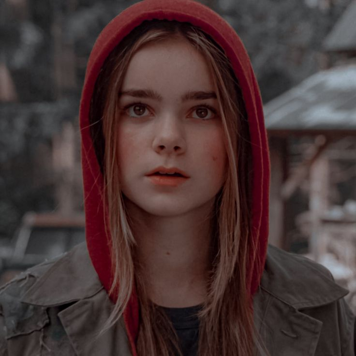

Profile
Name: Maisie Lockwood
Age: 12 (as of *Jurassic World: Fallen Kingdom*)
Occupation: Student
Specialty: Survival and Dinosaur Protection
Character Background
Maisie Lockwood is the granddaughter of Benjamin Lockwood, a former partner of John Hammond. She is unexpectedly revealed to be a clone, a secret her grandfather kept hidden. Maisie plays a pivotal role in protecting the dinosaurs during the events of *Jurassic World: Fallen Kingdom* and is instrumental in their survival as the park falls into chaos.
Key Appearances
- Jurassic World: Fallen Kingdom (2018)
- Jurassic World: Dominion (2022)
Famous Quote
"I’m not a secret." – Maisie Lockwood, Jurassic World: Fallen Kingdom (2018)